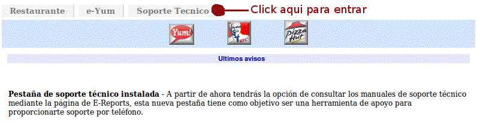
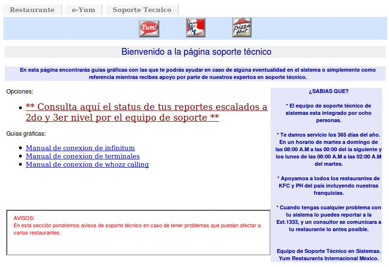
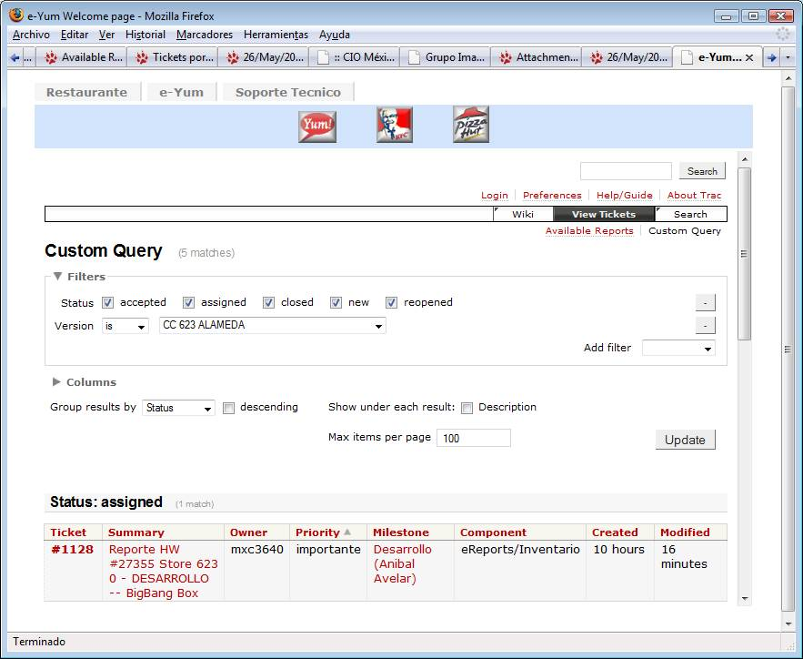
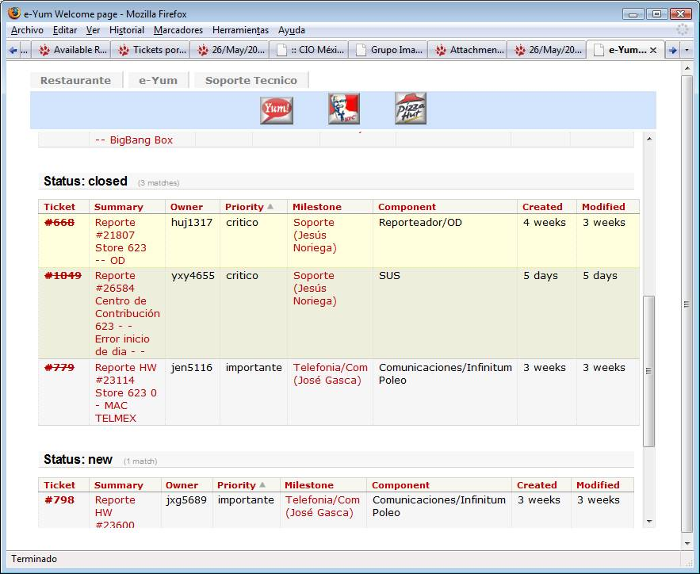
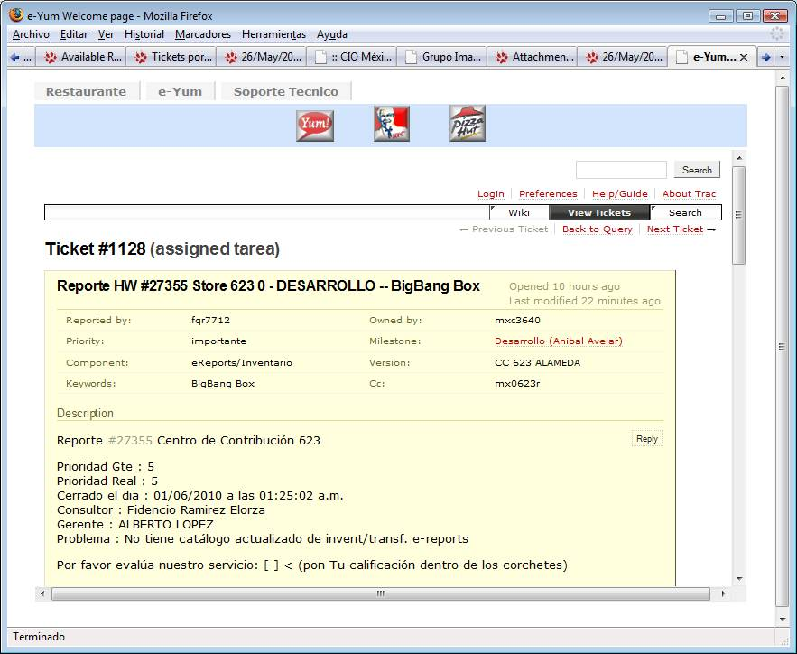
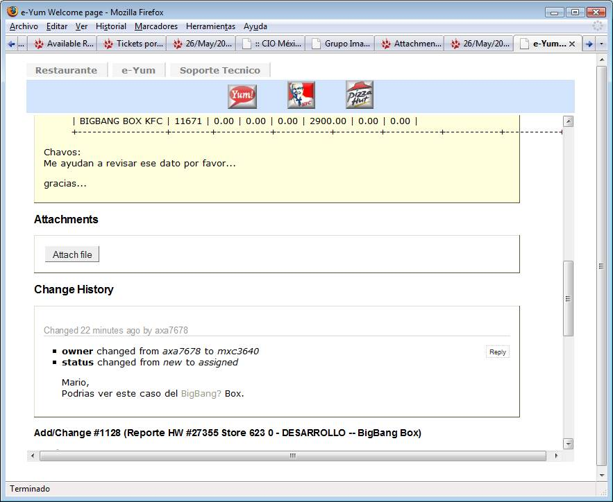
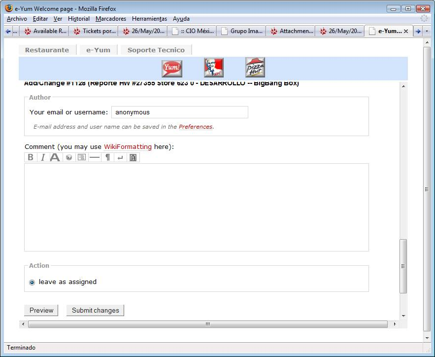

Hola a todos!
Si escuchamos la voz de nuestros clientes, su
retroalimentación en la encuesta de sistemas es muy importante para mejorar
nuestro servicio. En las encuestas nos han dicho que cuando reportan un
problema a Soporte Técnico en la extensión 1333 y este se escala a
segundo o tercer nivel (a otra persona de sistemas que no es el consultor
que les llama; telefonía, e-yum, desarrollo), ya no saben qué pasa, si se le da
seguimiento o no, que se está haciendo o si ya se solucionó, y con quien
pueden verlo directamente si tienen duda. La solución? TRAC. Un
nuevo sistema para dar seguimiento a estos reportes y ver que se les está
dando una respuesta adecuada:, con este sistema tendrán:
1.
Un correo por cada reporte escalado y donde se les asigna un número
de ticket y se copia a todos los involucrados (seguro muchos de ustedes
ya han visto estos correos, un ejemplo del número de ticket es: #1102).
2.
Cada vez que haya una actualización o cambio en el ticket
ustedes recibirán un correo de notificación.
3.
En este correo viene el nombre del área y su encargado por si
tienen alguna duda ( ejemplo: Milestone:Telefonia/Com
(José Gasca))
4.
En este correo viene una liga para ver la historia del ticket en
una página Web tipo blog (El titulo subrayado, por ejemplo: #1102: Reporte HW
#27166 Store 806 0 - MAC TELMEX) . Ver abajo documentación más detallada del Mail.
5.
En
6.
El seguimiento a todos los tickets de su restaurante lo podrán
hacer desde la pantalla de e-reports en la pestaña de soporte técnico. Ver abajo documentación más
detallada de la pestaña de soporte.
Esperamos les sea me
mucha utilidad.
Sabemos que tiene
algunas áreas de oportunidad que iremos mejorando, por favor cualquier
comentario o duda estamos a sus ordenes (POR FAVOR SOLO RESPONDANME SOLO A MI
PARA NO AFECTAR OTROS BUZONES DE CORREO, GRACIAS)!
Gracias y Saludos.
Documentación más detallada del Mail:
#1102: Reporte HW
#27166 Store 806 0 - MAC TELMEX ß Liga a la página web del reporte
|
Reporter: |
axm8174 |
Owner: |
lum9718 |
|
Type: |
tarea |
Status: |
new |
|
Priority: |
importante |
Milestone: |
Telefonia/Com (José Gasca) |
|
Component: |
Comunicaciones/Infinitum Poleo |
Version: |
CC 806 LOS MOCHIS |
|
Keywords: |
|
|
|
Comment
(by axm8174)
Se pide status al MAC de Telmex Atendio: Nery Ramirez Linea 5-Directa: 668 8185 401 N° reporte: 1815316 Linea 6-Directa Infinitum: 668 8185 415 N° reporte: 1815310 Status de ambos reportes. Comenta que ya fueron a checar el servicio, y comentan que el problema es el speadstream y se va a enviar a cambiar el modem, van a cambiar el N° de folio ellos se pondran en contacto con Luis Moreno
Documentación más detallada de la pestaña de soporte

Les sale la pantalla
siguiente y hay que darle CLICK en la liga “ Consulta
aquí el status de tus reportes escalados a 2do y 3er nivel”, (para
salir de las pantallas que seguirán pueden darle “click” en
cualquier momento e la pestaña de “Soporte Técnico”) :

Les aparece una página con las ligas de
todos los tickets del restaurante agrupados por su status, Asignados (assigned),
nuevos (new) y cerrados (closed), con el responsable del área, hace cuanto se
creó el ticket (Created) y hace cuanto se modificó por última vez (Modfied):

Si le bajan con la barra al lado derecho (la
más interna) los pueden recorrer todos

Si le dan un click en el número de ticket
(#1128 por ejemplo, que es la misma liga que en el mail) a la liga los
lleva a la siguiente página donde pueden ver el historial y hacer comentarios o
preguntas, en amarillo sale al principio el reporte original:
Documentación
más detallada de la página web del ticket.

Si recorren la página hacia abajo irán
viendo la historia:

Hasta el final de la historia encontrarán
donde poner su comentario, por favor pongan su nombre donde
“Author”, donde dice “anonymous” y los
comentarios en el campo “Comment” de abajo, para mandar el
comentario por favor hay que apretarle en el botón de “Submit Changes”:
